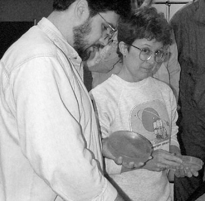

SJAA
Ephemeris
|
SJAA Ephemeris |
Show and Tell 1999Jane Houston |
Slide and Equipment night is by nature a showcase event in the SJAA. This year was no different. Well it was a little different, actually. How many astronomy slide shows begin with the Pastorale from Handel's Messiah, and end with the Adagio from Mahler's Second Symphony? If you attended the September 25th meeting you'll know what I'm talking about. If you didn't, my description cannot begin to portray the visual and aural feast we were served. Paul Graves began his incredible Solar Eclipse slide presentation with moon and music. Paul travelled to Hungary for the eclipse, and his slides from the air were almost as spectacular as his eclipse slides! First the moonrise was visible all the way across the continents and oceans from the airplane, compliments of the polar route. The clouds were so spectacular! Across the English channel and on he flew. His final destination was the town of Balatonfured on Lake Balaton in Hungary. Mike Koop and his group were staying at the same hotel as Paul and his group! What a small world this is!
The slides showed so much more than the eclipse. Haystacks at the centerline. The views Paul showed of the eclipse, from the dramatic cloudy sky just a few hours before the event, to the darkening sky during, and through to the end of the eclipse kept the audience spellbound. We all shared the joy as the clouds moved away to reveal our sun. First contact through to totality, from the diamond ring to prominences and corona, the slides flowed from one to the other, revealing the unfolding majesty of the solar eclipse. Each special slide was punctuated by an appropriate and regal musical selection. Near the end of his slide presentation, Paul selected Hungarian composer Antonin Dvorak's Symphony "From the New World" composed in New York in 1893. The movement, entitled "Going Home" was emotionally powerful, as were the slides. As Paul was "Going Home", he spent as much time as he wanted in the cockpit, snapping pictures of the icy white continent of Greenland. The images of glaciers and icebergs through the cockpit window were breathtaking! He finally had to relinquish his birds-eye view about the time for decent and landing. It was time to go home at last.
This was the main event at slides and equipment night, but there were other shows and tels. I had the misfortune to follow Pauls slide show with a few slides of sunset at Ayers Rock, Australia. Luckily, Paul let me use his smooth slide projector and cool music to accompany my show, so the audience didn't get too edgy.
On the Equipment end of things, Paul Mancuso showed his digital camera setup and some images he took with it at Fremont Peak using his C-8. Orion demonstrated the new Nextstar scope. Gary Mitchell showed his solar filter, and I'd better stop now because I lost my notes of who else had stuff to show. Let's see...Dave North and Akkana Peck showed their amazing 3-D spackle moon, complete with thirty or more geologically correct lunar features. Rich Neushaefer showed his new AP scope. Another AP, Rich? The 92.5mm F4.9 "Stowaway" with a flourite triplet objective is another of Roland's creations. What else is new?? Oh yeah, Jay Freeman had a puzzle for us to unravel. Any luck finding the edges yet, Jay?
If I forgot anything, just drop a note to the Editor at Ephemeris@whiteoaks.com and I'll cover it next time.
|  |
| Jane Houston; last updated: February 05, 2002 | Prev Next |